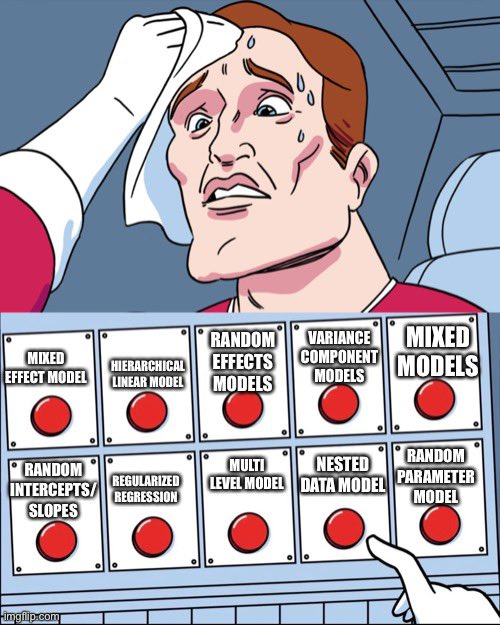

![]()
At the end of my previous post on beta and zero-inflated-beta regression, I included an example of a multilevel model that predicted the proportion of women members of parliament based on whether a country implements gender-based quotas for their legislatures, along with a few different control variables. I also included random effects for year and region in order to capture time- and geography-specific trends. When interpreting the results, I naively said that calculating posterior predictions from the model (i.e. plugging arbitrary values into the model and finding the predicted value of the outcome) magically and automatically includes information about year and region (or the random effects included in the model). But I was wrong-ish! Incorporating information about the random effects of a multilevel model is actually a lot more involved and detailed than I thought, and the nuances are really important and make a big difference!
As TJ Mahr recently tweeted, this is hard stuff!
Fortunately, over the past couple days I’ve been part of several really long Twitter threads (with people who know waaaay more about this than me!) about different ways of incorporating group-level effects into posterior predictions. HUGE THANKS to Isabella Ghement, Brenton Wiernik, TJ Mahr, Donald Williams, Solomon Kurz, and Mattan Ben-Shachar for all their help and tweeting! (This set of tweets by Brenton was pivotal!)
Who this guide is for
To borrow from Solomon Kurz, here’s what this guide assumes you know:
You’re familiar with R and the tidyverse (particularly dplyr and ggplot2).
You’re familiar with brms for running Bayesian regression models. See the vignettes here, examples like this, or resources like these for an introduction.
-
You’re somewhat familiar with multilevel models. Confusingly, these are also called mixed effect models, random effect models, and hierarchical models, among others! They’re all the same thing! (image below by Chelsea Parlett-Pelleriti)

See examples like this or this or this or this. Basically Google “lme4 example” (lme4 is what you use for frequentist, non-Bayesian multilevel models with R) or “brms multilevel example” and you’ll find a bunch. For a more formal treatment, see chapter 12 in Richard McElreath’s Statistcal Rethinking book (or this R translation of it by Solomon Kurz).
Example data
Put simply, multilevel models let you account for nested structures in data:
- Students inside schools inside school districts inside states
- Study participants inside cities inside states across months
- Countries within regions and across years
Since most of my own work deals with international politics, we’ll use an example with countries and years. We’ll use data from the Varieties of Democracy project (V-Dem) to explore the relationship between press freedom and the degree to which political opposition is allowed. Is there more press freedom in countries that allow opposition parties?
There’s a great R package for accessing V-Dem data without needing to download it manually from their website, so we’ll use that to make a smaller dataset of countries for just 2015. Let’s load all the libraries we need, clean up the data, and get started!
library(tidyverse) # ggplot, dplyr, %>%, and friends
library(brms) # Bayesian modeling through Stan
library(tidybayes) # Manipulate Stan objects in a tidy way
library(broom) # Convert model objects to data frames
library(broom.mixed) # Convert brms model objects to data frames
library(emmeans) # Calculate marginal effects in even fancier ways
library(vdemdata) # Use data from the Varieties of Democracy (V-Dem) project
library(patchwork) # Combine ggplot objects
library(ggokabeito) # Neat accessible color palette
library(gghalves) # Special half geoms
library(ggbeeswarm) # Special distribution-shaped point jittering
# Custom ggplot theme to make pretty plots
# Get the News Cycle font at https://fonts.google.com/specimen/News+Cycle
theme_clean <- function() {
theme_minimal(base_family = "News Cycle") +
theme(panel.grid.minor = element_blank(),
plot.title = element_text(face = "bold"),
axis.title = element_text(face = "bold"),
strip.text = element_text(face = "bold", size = rel(1), hjust = 0),
strip.background = element_rect(fill = "grey80", color = NA),
legend.title = element_text(face = "bold"))
}V-Dem includes hundreds of different variables, but we only need a few, and we’ll make a few adjustments to the ones we do need. Here’s what we’ll do:
-
Main outcome: Alternative sources of information index (
v2xme_altinfin V-Dem). This is a 0–1 scale that measures…To what extent the [is] media (a) un-biased in their coverage or lack of coverage of the opposition, (b) allowed to be critical of the regime, and (c) representative of a wide array of political perspectives
Higher values represent more media freedom.
-
Main binary explanatory variable: Opposition parties autonomy (
v2psoppautin V-Dem). This is an ordinal variable with these possible values:- 0: Opposition parties are not allowed.
- 1: There are no autonomous, independent opposition parties. Opposition parties are either selected or co-opted by the ruling regime.
- 2: At least some opposition parties are autonomous and independent of the ruling regime.
- 3: Most significant opposition parties are autonomous and independent of the ruling regime.
- 4: All opposition parties are autonomous and independent of the ruling regime.
For the sake of simplicity, we’ll collapse this into a binary variable. Parties are autonomous if they score a 3 or a 4; they’re not autonomous if they score a 0, 1, or 2. Also, there are a handful of countries (Saudi Arabia, Qatar, etc.) with missing data for this column, since they don’t have any opposition parties. We’ll treat them as not-autonomous here.
Main continuous explanatory variable: Civil liberties index (
v2x_civlib). This is a continuous variable measured from 0–1 with higher values representing better respect for human rights and civil liberties.-
Grouping: Finally, we’ll use region as groups in these models (i.e. countries nested in regions). V-Dem provides multiple regional variables with varying specificity (19 different regions, 10 different regions, and 6 different regions). We’ll use the 6-region version (
e_regionpol_6C) for simplicity here:- 1: Eastern Europe and Central Asia (including Mongolia)
- 2: Latin America and the Caribbean
- 3: The Middle East and North Africa (including Israel and Turkey, excluding Cyprus)
- 4: Sub-Saharan Africa
- 5: Western Europe and North America (including Cyprus, Australia and New Zealand)
- 6: Asia and Pacific (excluding Australia and New Zealand)
# Make a subset of the full V-Dem data
vdem_2015 <- vdem %>%
select(country_name, country_text_id, year, region = e_regionpol_6C,
media_index = v2xme_altinf, party_autonomy_ord = v2psoppaut_ord,
polyarchy = v2x_polyarchy, civil_liberties = v2x_civlib) %>%
filter(year == 2015) %>%
mutate(party_autonomy = party_autonomy_ord >= 3,
party_autonomy = ifelse(is.na(party_autonomy), FALSE, party_autonomy)) %>%
mutate(region = factor(region,
labels = c("Eastern Europe and Central Asia",
"Latin America and the Caribbean",
"Middle East and North Africa",
"Sub-Saharan Africa",
"Western Europe and North America",
"Asia and Pacific")))Explore the data
We’re interested in a couple relationships here. First, we want to know if there is more press freedom in countries that allow opposition parties in elections. Let’s look at the data really quick:
autonomy_halves <- ggplot(vdem_2015, aes(x = party_autonomy, y = media_index)) +
geom_half_point(aes(color = party_autonomy),
transformation = position_quasirandom(width = 0.1),
side = "l", size = 0.5, alpha = 0.5) +
geom_half_boxplot(aes(fill = party_autonomy), side = "r") +
scale_fill_okabe_ito() +
scale_color_okabe_ito() +
guides(color = "none", fill = "none") +
labs(x = "Opposition party autonomy", y = "Media freedom index") +
theme_clean()
autonomy_densities <- ggplot(vdem_2015, aes(x = media_index, fill = party_autonomy)) +
geom_density(alpha = 0.6) +
scale_fill_okabe_ito() +
labs(x = "Media freedom index", y = "Density", fill = "Opposition party autonomy") +
theme_clean() +
theme(legend.position = "bottom")
autonomy_halves | autonomy_densitiesThat confirms our initial suspicions: countries that do not allow opposition parties to participate in elections tend to have substantially lower media freedom index scores than countries that have opposition parties.
Let’s see how respect for civil liberties is related to media freedom:
ggplot(vdem_2015, aes(x = civil_liberties, y = media_index)) +
geom_point(aes(color = region)) +
geom_smooth(method = "lm") +
labs(x = "Civil liberties index", y = "Media freedom index",
color = "Region") +
scale_color_okabe_ito() +
theme_clean()
## `geom_smooth()` using formula = 'y ~ x'Countries with greater respect for civil liberties and human rights tend to have higher values of media freedom. There are perhaps some regional trends here too—most of the countries in Western Europe and North America are clustered in the top right corner of the plot, but all other regions are spread throughout.
Model
Let’s make a model! We’ll look just at 2015 data to estimate the effect of party autonomy (a binary variable) and civil liberties (a continuous variable) on a country’s media freedom index. We’ll include random effects for region, assuming that there are regional differences in this relationship (i.e. the relationship between party autonomy and media freedom looks different in Asia from Western Europe).
Because media_index ranges from 0 to 1 but does not include 0 or 1, we’ll use a beta distribution. It’s a really neat and fun distribution to work with, and it has extra moving parts we can play with—we can model the \(\phi\) parameter (or the precision/variance of the distribution) with random effects too.
Formally, we can define the full model like this:
\[ \begin{aligned} &\text{[likelihood]} \\ \text{Media freedom index}_i &\sim \operatorname{Beta}(\mu_i, \phi_i) \\ \ \\ &\text{[} \mu \text{ part of beta distribution]} \\ \operatorname{logit}(\mu_i) &= \alpha_{j[i]} + \beta_1 \text{Party autonomy}_i + \beta_2 \text{Civil liberties}_i\\ \ \\ &\text{[} \phi \text{ part of beta distribution]} \\ \log(\phi_i) &= \alpha_{j[i]}\\ \ \\ & \text{[region-specific intercepts]} \\ \alpha_{j} &\sim \mathcal{N}(\mu_{\alpha_j}, \sigma^2_{\alpha_j}), \text{ for region } j \text{ in } 1 .. J \end{aligned} \]
We’ll model the \(\mu\) (or mean) parameter of the beta distribution with party_autonomy, civil_liberties, and random intercepts for region, and we’ll model the \(\phi\) part (or precision) with just random intercepts for region (though we could use whatever, too—see this for an explanation of what this parameter does).
The syntax for defining random effects can get complex, depending on if the effects are nested or crossed, and if slopes get involved. This table by Ben Bolker is indispensable for remembering how to define which kinds of effects. Here we’re just adding a random intercept for region, so we’ll use a (1 | region) term in the model code.
model_basic <- brm(
bf(media_index ~ party_autonomy + civil_liberties + (1 | region),
phi ~ (1 | region)),
data = vdem_2015,
family = Beta(),
control = list(adapt_delta = 0.9),
chains = 4, iter = 2000, warmup = 1000,
cores = 4, seed = 12345,
# Use the cmdstanr backend for Stan because it's faster and more modern than
# the default rstan. You need to install the cmdstanr package first
# (https://mc-stan.org/cmdstanr/) and then run cmdstanr::install_cmdstan() to
# install cmdstan on your computer.
backend = "cmdstanr"
)
## Start sampling
## Warning: 1 of 4000 (0.0%) transitions ended with a divergence.
## See https://mc-stan.org/misc/warnings for details.Posterior predictions
Because this model uses beta regression, the coefficients for the \(\mu\) part are on the logit (log odds) scale, while the coefficients for the \(\phi\) part are on the log scale. This makes them really hard to interpret when just looking at a table of coefficient estimates, like this one here:
tidy(model_basic)
## # A tibble: 6 × 8
## effect component group term estimate std.error conf.low conf.high
## <chr> <chr> <chr> <chr> <dbl> <dbl> <dbl> <dbl>
## 1 fixed cond <NA> (Intercept) -2.46 0.302 -3.04 -1.87
## 2 fixed cond <NA> phi_(Intercept) 2.35 0.474 1.35 3.22
## 3 fixed cond <NA> party_autonomyTRUE 1.03 0.172 0.698 1.38
## 4 fixed cond <NA> civil_liberties 3.51 0.316 2.90 4.12
## 5 ran_pars cond region sd__(Intercept) 0.499 0.256 0.211 1.19
## 6 ran_pars cond region sd__phi_(Intercept) 0.925 0.451 0.365 2.06Even if we back-transform the estimates to the response scale (with plogis() for the logits and exp() for the logs), we still cannot interpret the coefficients directly. Unlike regular OLS-like regression models, we can’t say things like “a one-unit increase in party_autonomy is associated with a plogis(2.27) unit increase in media_freedom”—we have to incorporate the intercept and all the other model parameters in order to make marginal interpretations like that.
In this case, we are interested in these marginal effects, though. What is the effect of flipping party_autonomy from FALSE to TRUE? What is the effect of a one-unit increase in the respect for human rights and civil liberties measured by civil_liberties? You can’t easily figure it out with the raw results of the model because there are so many moving parts: the different pieces (intercept, other coefficients) for the \(\mu\) part need to be combined, the precision parameter \(\phi\) needs to be incorporated somehow, and random regional effects for both the \(\mu\) and the \(\phi\) parts need to be accounted for. That’s a mess.
Instead of trying to algebraically piece all this together, we can plug hypothetical data into the model’s posterior distribution and generate posterior predictions of our media freedom outcome.
Draws from the posterior predictive distribution
There are a few general approaches to generating posterior predictions with brms. First, we can use posterior_predict() to plug a new dataset into the model. As an example, we’ll create a little dataset where party_autonomy is both TRUE and FALSE, and we’ll arbitrarily set civil_liberties to 0.5 (right in the middle of its range) and region to the Middle East and North Africa. We’ll then plug that in to the model and generate predictions
newdata <- expand_grid(party_autonomy = c(TRUE, FALSE),
civil_liberties = c(0.5),
region = "Middle East and North Africa")
newdata
## # A tibble: 2 × 3
## party_autonomy civil_liberties region
## <lgl> <dbl> <chr>
## 1 TRUE 0.5 Middle East and North Africa
## 2 FALSE 0.5 Middle East and North Africa
posterior_predict(model_basic, newdata) %>% head()
## [,1] [,2]
## [1,] 0.894 0.401
## [2,] 0.400 0.751
## [3,] 0.864 0.476
## [4,] 0.374 0.332
## [5,] 0.544 0.495
## [6,] 0.564 0.596This returns a matrix with 4,000 rows and 2 columns—a column for when party_autonomy is TRUE and one for when it is FALSE. This format isn’t in the nicest shape for plotting and doing tidy type of stuff with, so we can alternatively use predicted_draws() from the tidybayes package. This is really just a fancy wrapper around brms::posterior_predict() that returns a much nicer tidier data frame:
tidy_pred <- model_basic %>%
predicted_draws(newdata = newdata)
tidy_pred
## # A tibble: 8,000 × 8
## # Groups: party_autonomy, civil_liberties, region, .row [2]
## party_autonomy civil_liberties region .row .chain .iteration .draw .prediction
## <lgl> <dbl> <chr> <int> <int> <int> <int> <dbl>
## 1 TRUE 0.5 Middle East a… 1 NA NA 1 0.669
## 2 TRUE 0.5 Middle East a… 1 NA NA 2 0.811
## 3 TRUE 0.5 Middle East a… 1 NA NA 3 0.378
## 4 TRUE 0.5 Middle East a… 1 NA NA 4 0.329
## 5 TRUE 0.5 Middle East a… 1 NA NA 5 0.559
## 6 TRUE 0.5 Middle East a… 1 NA NA 6 0.518
## 7 TRUE 0.5 Middle East a… 1 NA NA 7 0.927
## 8 TRUE 0.5 Middle East a… 1 NA NA 8 0.823
## 9 TRUE 0.5 Middle East a… 1 NA NA 9 0.475
## 10 TRUE 0.5 Middle East a… 1 NA NA 10 0.802
## # ℹ 7,990 more rowsThat’s much nicer to work with!
Expected values of the posterior predictive distribution
We don’t necessarily want to use these predicted draws when thinking about marginal effects of coefficients, though. When we use posterior_predict()/predicted_draws() here, brms accounts for the uncertainty of all these things:
- The uncertainty of the fixed coefficients (e.g.,
party_autonomyandcivil_liberties) - The uncertainty of the variance parameters of the groups (e.g.,
sd__phi_(Intercept)for each region) - The uncertainty for each individual observation (e.g., observational-level residual variance)
When thinking about marginal effects, though, we’re more interested in the expected value of the outcome, which means we’re more focused on the uncertainty in the model parameters and not necessarily the individual-level residuals (See this post or this discussion for an explanation of the difference between the two types of predictions). To get these expected values, we can use brms::posterior_epred() (or the nicer tidybayes::epred_draws()), which accounts for the uncertainty of just these two things:
- The uncertainty of the fixed coefficients (e.g.,
party_autonomyandcivil_liberties) - The uncertainty of the variance parameters of the groups (e.g.,
sd__phi_(Intercept)for each region)
The averages of these draws that are generated by regular posterior_predict() and posterior_epred() should be generally the same, but the variance for expected values will be smaller (since we’re not dealing with individual observation-level variance).
# Expected values with brms
posterior_epred(model_basic, newdata) %>% head()
## [,1] [,2]
## [1,] 0.677 0.413
## [2,] 0.605 0.387
## [3,] 0.619 0.395
## [4,] 0.593 0.304
## [5,] 0.697 0.389
## [6,] 0.527 0.353
# Expected values with tidybayes
tidy_epred <- model_basic %>%
epred_draws(newdata = newdata)
tidy_epred
## # A tibble: 8,000 × 8
## # Groups: party_autonomy, civil_liberties, region, .row [2]
## party_autonomy civil_liberties region .row .chain .iteration .draw .epred
## <lgl> <dbl> <chr> <int> <int> <int> <int> <dbl>
## 1 TRUE 0.5 Middle East and No… 1 NA NA 1 0.677
## 2 TRUE 0.5 Middle East and No… 1 NA NA 2 0.605
## 3 TRUE 0.5 Middle East and No… 1 NA NA 3 0.619
## 4 TRUE 0.5 Middle East and No… 1 NA NA 4 0.593
## 5 TRUE 0.5 Middle East and No… 1 NA NA 5 0.697
## 6 TRUE 0.5 Middle East and No… 1 NA NA 6 0.527
## 7 TRUE 0.5 Middle East and No… 1 NA NA 7 0.756
## 8 TRUE 0.5 Middle East and No… 1 NA NA 8 0.659
## 9 TRUE 0.5 Middle East and No… 1 NA NA 9 0.524
## 10 TRUE 0.5 Middle East and No… 1 NA NA 10 0.701
## # ℹ 7,990 more rowsHere’s what the difference in variance actually looks like:
plot_preds <- bind_rows(
"Predicted draws" = tidy_pred,
"Expectation of predicted draws" = rename(tidy_epred, .prediction = .epred),
.id = "draw_type") %>%
mutate(draw_type = fct_inorder(draw_type))
plot_preds %>%
group_by(draw_type, party_autonomy) %>%
median_hdi(.prediction)
## # A tibble: 4 × 8
## draw_type party_autonomy .prediction .lower .upper .width .point .interval
## <fct> <lgl> <dbl> <dbl> <dbl> <dbl> <chr> <chr>
## 1 Predicted draws FALSE 0.355 0.0183 0.725 0.95 median hdi
## 2 Predicted draws TRUE 0.638 0.242 0.976 0.95 median hdi
## 3 Expectation of predict… FALSE 0.369 0.287 0.461 0.95 median hdi
## 4 Expectation of predict… TRUE 0.622 0.532 0.707 0.95 median hdi
ggplot(plot_preds, aes(x = .prediction, fill = party_autonomy)) +
stat_halfeye() +
labs(x = "Predicted media index", y = "Density", fill = "Party autonomy") +
facet_wrap(vars(draw_type)) +
scale_fill_okabe_ito() +
theme_clean() +
theme(legend.position = "bottom")The median values from both types of draws are the same. When there’s no party autonomy, the median predicted media index is around 0.11; when there is party autonomy, the median predicted media index is around 0.6. But the variance is wildly different and is much narrower when looking at the expectation of predicted draws.
For all our marginal effects calculations here, we’re going to use expected values, or epred_draws().
Average marginal effects
In the plot above, we got predicted values of our outcome across different levels of party autonomy when holding civil liberties and region constant, and that’s neat, but what we’re really interested in is the difference between those two distributions, or the marginal effect of flipping party autonomy from false to true. How much of an increase in the predicted media index when there is party autonomy?
We already have all the information we need to calculate this with our tidy_epred. If we rearrange the dataset so that it’s wide, with a column for party autonomy being true and a column for when it’s false, we can subtract the two columns and get the difference:
tidy_epred %>%
ungroup() %>%
select(-.row) %>%
pivot_wider(names_from = "party_autonomy", values_from = ".epred") %>%
mutate(autonomy_effect = `TRUE` - `FALSE`)
## # A tibble: 4,000 × 8
## civil_liberties region .chain .iteration .draw `TRUE` `FALSE` autonomy_effect
## <dbl> <chr> <int> <int> <int> <dbl> <dbl> <dbl>
## 1 0.5 Middle East and… NA NA 1 0.677 0.413 0.265
## 2 0.5 Middle East and… NA NA 2 0.605 0.387 0.218
## 3 0.5 Middle East and… NA NA 3 0.619 0.395 0.224
## 4 0.5 Middle East and… NA NA 4 0.593 0.304 0.290
## 5 0.5 Middle East and… NA NA 5 0.697 0.389 0.308
## 6 0.5 Middle East and… NA NA 6 0.527 0.353 0.174
## 7 0.5 Middle East and… NA NA 7 0.756 0.500 0.256
## 8 0.5 Middle East and… NA NA 8 0.659 0.454 0.205
## 9 0.5 Middle East and… NA NA 9 0.524 0.294 0.230
## 10 0.5 Middle East and… NA NA 10 0.701 0.424 0.276
## # ℹ 3,990 more rowsWe could then plot that autonomy_effect column and see the average marginal effect of party autonomy. But that’s a lot of data wrangling and pivoting! There’s an easier way! Instead of manually working with the posterior predictions like this, we can use the emmeans package, which was designed specifically for this kind of work.
With emmeans(), we don’t have to create our own hypothetical newdata data frame—the function does that for us. We need to specify epred = TRUE to get the expectation of predicted draws, since it’ll give us predicted draws by default.
If we run emmeans() by itself, it’ll print a summary table of the predicted values:
model_basic %>%
emmeans(~ party_autonomy,
at = list(civil_liberties = 0.5,
region = "Middle East and North Africa"),
epred = TRUE)
## party_autonomy emmean lower.HPD upper.HPD
## FALSE 0.329 0.223 0.445
## TRUE 0.578 0.461 0.691
##
## Point estimate displayed: median
## HPD interval probability: 0.95We also don’t need to calculate the autonomy effect by hand—the constrast() function will do that for us too (the revpairwise option here makes it so it’ll calculate TRUE - FALSE instead of FALSE - TRUE):
model_basic %>%
emmeans(~ party_autonomy,
at = list(civil_liberties = 0.5,
region = "Middle East and North Africa"),
epred = TRUE) %>%
contrast(method = "revpairwise")
## contrast estimate lower.HPD upper.HPD
## TRUE - FALSE 0.246 0.171 0.327
##
## Point estimate displayed: median
## HPD interval probability: 0.95If we store the results of emmeans() as an object, we actually get access to all the posterior draws that it created for the predictions, which we can then extract and rearrange with tidybayes’s gather_emmeans_draws(). (Without the contrast() step, we’d get predicted values for both levels of party_autonomy.)
autonomy_effect_draws <- model_basic %>%
emmeans(~ party_autonomy,
at = list(civil_liberties = 0.5,
region = "Middle East and North Africa"),
epred = TRUE) %>%
contrast(method = "revpairwise") %>%
gather_emmeans_draws()
autonomy_effect_draws
## # A tibble: 4,000 × 5
## # Groups: contrast [1]
## contrast .chain .iteration .draw .value
## <chr> <int> <int> <int> <dbl>
## 1 TRUE - FALSE NA NA 1 0.254
## 2 TRUE - FALSE NA NA 2 0.217
## 3 TRUE - FALSE NA NA 3 0.223
## 4 TRUE - FALSE NA NA 4 0.292
## 5 TRUE - FALSE NA NA 5 0.311
## 6 TRUE - FALSE NA NA 6 0.169
## 7 TRUE - FALSE NA NA 7 0.275
## 8 TRUE - FALSE NA NA 8 0.205
## 9 TRUE - FALSE NA NA 9 0.237
## 10 TRUE - FALSE NA NA 10 0.270
## # ℹ 3,990 more rows
autonomy_effect_draws %>% median_hdi()
## # A tibble: 1 × 7
## contrast .value .lower .upper .width .point .interval
## <chr> <dbl> <dbl> <dbl> <dbl> <chr> <chr>
## 1 TRUE - FALSE 0.246 0.171 0.327 0.95 median hdi
ggplot(autonomy_effect_draws, aes(x = .value)) +
stat_halfeye(fill = palette_okabe_ito(order = 5)) +
labs(x = "Average marginal effect of party autonomy", y = "Density") +
theme_clean() +
theme(legend.position = "bottom")That’s so cool! There’s our marginal effect. On average, having party autonomy is associated with a 0.247 point higher media freedom index score. Since it’s measured on a 0–1 scale, that’s a pretty sizable effect!
Where emmeans really shines is figuring out the average marginal effect for continuous predictors. Working with party autonomy was easy enough: get the predicted value when it’s false, get the predicted value when it’s true, and find the difference. Getting a continuous effect, though, is a lot trickier since it involves slopes and first derivatives and calculus. Plus we’re working with a nonlinear model, so the slope is different across the whole range of predictions.
For instance, here’s the predicted media freedom index across a range of respect for civil liberties. It’s curvy! The slope is really flat down at low levels of civil liberties, and it’s steep up at high levels
pred_civlib <- model_basic %>%
epred_draws(newdata = expand_grid(party_autonomy = FALSE,
region = "Middle East and North Africa",
civil_liberties = seq(0, 1, by = 0.05)))
ggplot(pred_civlib, aes(x = civil_liberties, y = .epred)) +
stat_lineribbon() +
scale_fill_brewer(palette = "Reds") +
labs(x = "Civil liberties index", y = "Predicted media freedom index",
fill = "Credible interval") +
theme_clean() +
theme(legend.position = "bottom")The emtrends() function from emmeans lets us find the slope at different hypothetical values. (Technically behind the scenes, if we tell it to show us the slope when civil_liberties is 0.5, it’ll calculate the predicted value at 0.5 and the predicted value at 0.50001, and then average those predictions, rather than try to figure out the true calculus-based derivative).
If we don’t specify possible values of civil_liberties, it will give us the slope at the average value of civil_liberties (0.698):
model_basic %>%
emtrends(~ civil_liberties,
var = "civil_liberties",
at = list(party_autonomy = FALSE,
region = "Middle East and North Africa"),
epred = TRUE)
## civil_liberties civil_liberties.trend lower.HPD upper.HPD
## 0.696 0.865 0.702 1.03
##
## Point estimate displayed: median
## HPD interval probability: 0.95If we use ~ 1 in the formula instead of ~ civil_liberties, it will give us the average overall slope:
model_basic %>%
emtrends(~ 1,
var = "civil_liberties",
at = list(party_autonomy = FALSE,
region = "Middle East and North Africa"),
epred = TRUE)
## 1 civil_liberties.trend lower.HPD upper.HPD
## overall 0.865 0.702 1.03
##
## Point estimate displayed: median
## HPD interval probability: 0.95Or we can specify specific values of civil_liberties to get the slope at those points:
model_basic %>%
emtrends(~ civil_liberties,
var = "civil_liberties",
at = list(party_autonomy = FALSE,
region = "Middle East and North Africa",
civil_liberties = c(0.2, 0.5, 0.8)),
epred = TRUE)
## civil_liberties civil_liberties.trend lower.HPD upper.HPD
## 0.2 0.436 0.295 0.607
## 0.5 0.767 0.577 0.951
## 0.8 0.838 0.695 0.982
##
## Point estimate displayed: median
## HPD interval probability: 0.95The civil liberties effect varies a lot depending on existing levels of civil liberties! Let’s visualize these three effects. We’ll scale the effect down, though, since civil liberties is on a 0–1 scale and a 1-unit change means going from 0 to 1, which is huge. We’ll think about this as a 0.1-point increase in the civil liberties scale.
ame_civlib <- model_basic %>%
emtrends(~ civil_liberties,
var = "civil_liberties",
at = list(party_autonomy = FALSE,
region = "Middle East and North Africa",
civil_liberties = c(0.2, 0.5, 0.8)),
epred = TRUE) %>%
gather_emmeans_draws() %>%
# Scale this down
mutate(.value = .value / 10)
ggplot(ame_civlib, aes(x = .value, fill = factor(civil_liberties))) +
stat_halfeye(slab_alpha = 0.75) +
scale_fill_okabe_ito(order = c(3, 4, 6)) +
labs(x = "Average marginal effect of a\n0.1-point increase in the civil liberties index",
y = "Density", fill = "Civil liberties index",
caption = "80% and 95% credible intervals shown in black") +
theme_clean() +
theme(legend.position = "bottom")For countries with low levels of civil liberties, a 0.1-point increase in respect for civil liberties (e.g., moving from 0.2 to 0.3) is associated with a 0.0436-point increase in the media freedom index. For a middle ground country, though, moving from 0.5 to 0.6 in civil liberties is associated with a 0.0763-point increase in the media freedom index, while countries with strong civil liberties see a strong increase in the media freedom index (0.0833 points). Cool cool cool.
Different kinds of average predictions with multilevel models
BUT THERE’S A HUGE CAVEAT HERE!
Guess what?! All these predicted average effects aren’t quite what we think they are. (That’s what TJ was referring to in the tweet at the beginning of this post!)
Because we’re working with multilevel models, we actually have other moving parts to think about: the regional effects. When we talk about average marginal effects with multilevel models, we have to be explicit about what kinds of averages we’re working with. There are a few different kinds of averages we can calculate:
- Global grand mean
- Conditional effects for existing groups
- Conditional effects for a single hypothetical group, either typical or brand new
We can specify all these different kinds of calculations with certain combinations of a few arguments to posterior_epred() / epred_draws() / emmeans() / emmtrends():
-
newdata: Specify which regions to include in the predictions -
re_formula: Specify how (and whether) to handle the model’s random effects in the predictions -
sample_new_levels: Specify how to handle the uncertainty in new random effects in the predictions
(These are all documented in the help pages for ?brms::prepare_predictions())
Global grand mean
With a global grand mean, we calculate the expected value of the media freedom index while ignoring any region-specific deviations of the intercept or slope. We do not incorporate any of the region-specific information from the model into the predictions. This provides us with a global grand mean—an average that transcends regional differences.
To calculate this, we need to feed brms a new dataset that doesn’t include any region, and we need to tell it to not use any random effects by including re_formula = NA.
Binary effect
Let’s look at the global average marginal effect for party autonomy, which is binary:
# Posterior predictions across autonomy
grand_mean_autonomy_dist <- model_basic %>%
epred_draws(newdata = expand_grid(party_autonomy = c(TRUE, FALSE),
civil_liberties = c(0.5)),
re_formula = NA)
plot_grand_mean_autonomy <- ggplot(grand_mean_autonomy_dist,
aes(x = .epred, y = "Grand mean",
fill = party_autonomy)) +
stat_halfeye() +
scale_fill_okabe_ito() +
labs(x = "Predicted media index", y = NULL,
fill = "Opposition parties allowed",
subtitle = "Posterior predictions") +
theme_clean() +
theme(legend.position = "bottom")
# emmeans()-based difference across autonomy
grand_mean_autonomy_ame <- model_basic %>%
emmeans(~ party_autonomy,
at = list(civil_liberties = 0.5),
epred = TRUE, re_formula = NA) %>%
contrast(method = "revpairwise") %>%
gather_emmeans_draws()
plot_grand_mean_autonomy_ame <- ggplot(grand_mean_autonomy_ame,
aes(x = .value, y = "Grand AME")) +
stat_halfeye(fill = palette_okabe_ito(order = 7)) +
labs(x = "Average marginal effect of party autonomy", y = NULL,
subtitle = "Marginal effect (TRUE − FALSE)") +
theme_clean() +
theme(legend.position = "bottom")
# Combined plot
(plot_grand_mean_autonomy | plot_grand_mean_autonomy_ame) +
plot_annotation(title = "Global grand mean",
subtitle = "re_formula = NA; no region in newdata",
theme = theme_clean())And here are the actual medians and credible intervals:
grand_mean_autonomy_ame %>% median_hdi()
## # A tibble: 1 × 7
## contrast .value .lower .upper .width .point .interval
## <chr> <dbl> <dbl> <dbl> <dbl> <chr> <chr>
## 1 TRUE - FALSE 0.246 0.171 0.327 0.95 median hdiThe region-free grand average marginal effect for party autonomy is thus 0.247.
Continuous effect
Next we can look at the average marginal effect for civil liberties, which is continuous:
# Posterior predictions across civil_liberties
grand_mean_civlib_dist <- model_basic %>%
epred_draws(newdata = expand_grid(party_autonomy = FALSE,
civil_liberties = seq(0, 1, by = 0.05)),
re_formula = NA)
plot_grand_mean_civlib <- ggplot(grand_mean_civlib_dist,
aes(x = civil_liberties, y = .epred)) +
stat_lineribbon() +
scale_fill_brewer(palette = "Reds") +
labs(x = "Civil liberties index", y = "Predicted media freedom index",
fill = "Credible interval") +
theme_clean() +
theme(legend.position = "bottom")
# emtrends()-based AMEs
grand_mean_civlib_ame <- model_basic %>%
emtrends(~ civil_liberties,
var = "civil_liberties",
at = list(party_autonomy = FALSE,
civil_liberties = c(0.2, 0.8)),
epred = TRUE, re_formula = NA) %>%
gather_emmeans_draws()
plot_grand_mean_civlib_ame <- ggplot(grand_mean_civlib_ame,
aes(x = .value / 10, fill = factor(civil_liberties))) +
stat_halfeye(slab_alpha = 0.75) +
scale_fill_okabe_ito(order = c(3, 4)) +
labs(x = "Average marginal effect of a\n0.1-point increase in the civil liberties index",
y = "Density", fill = "Civil liberties index") +
theme_clean() +
theme(legend.position = "bottom")
# Combined plot
(plot_grand_mean_civlib | plot_grand_mean_civlib_ame) +
plot_annotation(title = "Grand mean",
subtitle = "re_formula = NA; no region in newdata",
theme = theme_clean())And here are the actual medians for these effects:
grand_mean_civlib_ame %>% median_hdi()
## # A tibble: 2 × 7
## civil_liberties .value .lower .upper .width .point .interval
## <dbl> <dbl> <dbl> <dbl> <dbl> <chr> <chr>
## 1 0.2 0.436 0.295 0.607 0.95 median hdi
## 2 0.8 0.838 0.695 0.982 0.95 median hdiThe region-free grand average marginal effect for civil liberties is 0.436 for low values of civil liberties (0.2), and 0.833 for high values (0.8).
Conditional effects for existing groups
Instead of calculating a grand mean without any group information, we can incorporate regional effects into our predictions. We can create conditional effects for specific regions that already exist in the data, incorporating their region-specific deviations in slope and intercept.
To calculate this, we need to feed brms a new dataset that does include one or more regions that are already in the data, and we need to tell it to incorporate the random effects into its predictions by including re_formula = NULL. That feels weird, since re_formula = NA made it so there were no group effects, but that’s the syntax.
We can also be more explicit about which group effects to include. When using re_formula = NULL, all group effects are included. If we made a model with both region and year effects, for instance, and only wanted to predict using the region effects, we could use re_formula = ~ (1 | region). Or if we don’t want to remember that NULL means “everything”, we could also just use re_formula = ~ (1 | region) on our basic model with just regional effects. It’s all the same.
Binary effect
Let’s look at the binary region-specific average marginal effect for party autonomy across all six regions:
# Posterior predictions across autonomy and region
all_regions_autonomy_dist <- model_basic %>%
epred_draws(newdata = expand_grid(party_autonomy = c(TRUE, FALSE),
region = levels(vdem_2015$region),
civil_liberties = c(0.5)),
re_formula = NULL) # or re_formula = ~ (1 | region)
plot_all_regions_autonomy <- ggplot(all_regions_autonomy_dist,
aes(x = .epred, y = region,
fill = party_autonomy)) +
stat_halfeye() +
scale_fill_okabe_ito() +
labs(x = "Predicted media index", y = NULL,
fill = "Opposition parties allowed",
subtitle = "Posterior predictions") +
theme_clean() +
theme(legend.position = "bottom")
# emmeans()-based difference across autonomy, by region
all_regions_autonomy_ame <- model_basic %>%
emmeans(~ party_autonomy + region,
at = list(civil_liberties = 0.5,
region = levels(vdem_2015$region)),
epred = TRUE, re_formula = NULL) %>%
contrast(method = "revpairwise", by = "region") %>%
gather_emmeans_draws()
plot_all_regions_autonomy_ame <- ggplot(all_regions_autonomy_ame,
aes(x = .value, y = region)) +
stat_halfeye(fill = palette_okabe_ito(order = 7)) +
labs(x = "Average marginal effect of party autonomy", y = NULL,
subtitle = "Marginal effect (TRUE − FALSE)") +
theme_clean() +
theme(legend.position = "bottom")
# Combined plot
(plot_all_regions_autonomy | plot_all_regions_autonomy_ame + theme(axis.text.y = element_blank())) +
plot_annotation(title = "Region-specific means",
subtitle = "re_formula = NULL; existing region(s) included in newdata",
theme = theme_clean())And here are the actual medians and credible intervals:
all_regions_autonomy_ame %>% median_hdi()
## # A tibble: 6 × 8
## contrast region .value .lower .upper .width .point .interval
## <fct> <fct> <dbl> <dbl> <dbl> <dbl> <chr> <chr>
## 1 TRUE - FALSE Eastern Europe and Central As… 0.231 0.155 0.303 0.95 median hdi
## 2 TRUE - FALSE Latin America and the Caribbe… 0.241 0.161 0.314 0.95 median hdi
## 3 TRUE - FALSE Middle East and North Africa 0.250 0.172 0.330 0.95 median hdi
## 4 TRUE - FALSE Sub-Saharan Africa 0.250 0.173 0.330 0.95 median hdi
## 5 TRUE - FALSE Western Europe and North Amer… 0.243 0.162 0.320 0.95 median hdi
## 6 TRUE - FALSE Asia and Pacific 0.239 0.166 0.314 0.95 median hdiThe average marginal effect changes depending on region, but not by much. Across all regions, having party autonomy is associated with a 0.24 to 0.25-point increase in the media freedom index, on average. Importantly, these average effects incorporate the uncertainty that comes from the regional multilevel structure that we built in the model.
Continuous effect
Next we’ll look at the continuous region-specific average marginal effect for civil liberties across all six regions:
# Posterior predictions across civil_liberties and regions
all_regions_civlib_dist <- model_basic %>%
epred_draws(newdata = expand_grid(party_autonomy = FALSE,
civil_liberties = seq(0, 1, by = 0.05),
region = levels(vdem_2015$region)),
re_formula = NULL)
plot_all_regions_civlib <- ggplot(all_regions_civlib_dist,
aes(x = civil_liberties, y = .epred)) +
stat_lineribbon() +
scale_fill_brewer(palette = "Reds") +
labs(x = "Civil liberties index", y = "Predicted media freedom index",
fill = "Credible interval") +
facet_wrap(vars(region)) +
theme_clean() +
theme(legend.position = "bottom")
# emtrends()-based AMEs across region
all_regions_civlib_ame <- model_basic %>%
emtrends(~ civil_liberties + region,
var = "civil_liberties",
at = list(party_autonomy = FALSE,
civil_liberties = c(0.2, 0.8),
region = levels(vdem_2015$region)),
epred = TRUE, re_formula = NULL) %>%
gather_emmeans_draws()
plot_all_regions_civlib_ame <- ggplot(all_regions_civlib_ame,
aes(x = .value / 10, fill = factor(civil_liberties))) +
stat_halfeye(slab_alpha = 0.75) +
scale_fill_okabe_ito(order = c(3, 4)) +
labs(x = "Average marginal effect of a\n0.1-point increase in the civil liberties index",
y = "Density", fill = "Civil liberties index") +
facet_wrap(vars(region)) +
theme_clean() +
theme(legend.position = "bottom")
(plot_all_regions_civlib / plot_all_regions_civlib_ame) +
plot_annotation(title = "Region-specific means",
subtitle = "re_formula = NULL; existing region(s) included in newdata",
theme = theme_clean())And here are the actual medians for these effects:
all_regions_civlib_ame %>% median_hdi()
## # A tibble: 12 × 8
## civil_liberties region .value .lower .upper .width .point .interval
## <dbl> <fct> <dbl> <dbl> <dbl> <dbl> <chr> <chr>
## 1 0.2 Eastern Europe and Centra… 0.327 0.246 0.418 0.95 median hdi
## 2 0.2 Latin America and the Car… 0.380 0.290 0.475 0.95 median hdi
## 3 0.2 Middle East and North Afr… 0.492 0.377 0.638 0.95 median hdi
## 4 0.2 Sub-Saharan Africa 0.479 0.373 0.590 0.95 median hdi
## 5 0.2 Western Europe and North … 0.609 0.469 0.729 0.95 median hdi
## 6 0.2 Asia and Pacific 0.366 0.267 0.479 0.95 median hdi
## 7 0.8 Eastern Europe and Centra… 0.871 0.709 1.02 0.95 median hdi
## 8 0.8 Latin America and the Car… 0.865 0.725 1.01 0.95 median hdi
## 9 0.8 Middle East and North Afr… 0.808 0.687 0.924 0.95 median hdi
## 10 0.8 Sub-Saharan Africa 0.819 0.708 0.926 0.95 median hdi
## 11 0.8 Western Europe and North … 0.724 0.585 0.885 0.95 median hdi
## 12 0.8 Asia and Pacific 0.865 0.712 1.00 0.95 median hdiAs expected, the average marginal effect for civil liberties varies across regions. For the Middle East and North Africa, for instance, it is 0.49 for low values of civil liberties (0.2), and 0.8 for high values (0.8), while in Eastern Europe and Central Asia, it is 0.328 for low values and 0.865 for high values.
Neat!
Conditional effects for a single new hypothetical group, either typical or brand new
So far we’ve calculated a grand mean with no regional effects and a bunch of conditional means for specific regions. But what if we want a single mean that also includes regional effects?
We have a few really nuanced options for doing this. In general, we’ll create a brand new hypothetical region and make predictions based on it. Where the nuance comes into play is how we construct this region and think about its variation. We can build its variance based on an average of the existing regions’ variances, or we can simulate a brand new kind of variance all together.
To do this, we need to include region in the new data we feed brms, but we need to include a name of a region that doesn’t exist (or alternatively, you can feed it region = NA). It will yell at you initially because that group doesn’t exist, but you can allow it to make these extrapolated predictions by including allow_new_levels = TRUE. We can include the random effects for region by setting re_formula = NULL (or re_formula = ~ (1 | region) if we want to be super explicit).
Finally, we have to specify how to handle the regional variation for this imaginary new group. We can either draw from the variation in all the other groups by setting sample_new_levels = "uncertainty" (this is the default), or we can randomly simulate a whole new kind of regional uncertainty based on the model’s existing parameters using sample_new_levels = "gaussian". The documentation for all this is included in ?brms::prepare_predictions.
In summary, we have these two general approaches:
- Create a hypothetical region that is based on the observed variation in the existing regions with
region = "Something new"in the new data andre_formula = NULL, allow_new_levels = TRUE, sample_new_levels = "uncertainty"in the prediction function - Create a hypothetical region that is completely brand new with
region = "Something new"in the new data andre_formula = NULL, allow_new_levels = TRUE, sample_new_levels = "gaussian"in the prediction function
For the sake of space I’ll only show marginal effects for the binary party_autonomy variable here. Follow the same process as all the examples above, but set re_formula = NULL, allow_new_levels = TRUE, and either sample_new_levels = "uncertainty" or sample_new_levels = "gaussian" when making the predictions.
Technically there are other ways to create simulated groups or regions, like sample_new_levels = "old_levels". Isabella Ghement has a great comprehensive table summarizing them all here. But we’re not going to worry about that here.
Binary effect for amalgamated hypothetical region
First we’ll create predictions for a hypothetical region that draws its group characteristics and variance from all the other regions in the data. To do this, we include region = "Something new" in the new data and re_formula = NULL, allow_new_levels = TRUE, sample_new_levels = "uncertainty" in the prediction function.
ame_hypothetical_amalgamated <- model_basic %>%
emmeans(~ party_autonomy + region,
at = list(civil_liberties = 0.5,
region = "Generic world region"),
epred = TRUE, re_formula = NULL,
allow_new_levels = TRUE, sample_new_levels = "uncertainty") %>%
contrast(method = "revpairwise") %>%
gather_emmeans_draws()
ame_hypothetical_amalgamated %>% median_hdi()
## # A tibble: 1 × 7
## contrast .value .lower .upper .width .point .interval
## <chr> <dbl> <dbl> <dbl> <dbl> <chr> <chr>
## 1 TRUE Generic world region - FALSE Generic … 0.243 0.164 0.320 0.95 median hdi
plot_ame_hypothetical_amalgamated <- ggplot(ame_hypothetical_amalgamated,
aes(x = .value, y = "Generic world region")) +
stat_halfeye(fill = palette_okabe_ito(order = 7)) +
labs(x = "Average marginal effect of party autonomy", y = NULL,
title = "Marginal effect in a generic world region") +
theme_clean() +
theme(legend.position = "bottom")
plot_ame_hypothetical_amalgamatedIn this case, the distribution is pretty smooth and normal looking, but if there’s a lot of variation in regional distributions, that variation will transfer to these predictions too.
For instance, in an earlier working version of this post, I had region-specific average predictions that varied substantially across regions. The resulting new hypothetical region reflected those different components—because the new generic world region is an amalgamation of uncertainty of all the existing regions, it includes both high values and low values (thanks to TJ Mahr for this insight!):
Binary effect for completely new hypothetical region
Alternatively, we can make it so that the new fake region uses a multivariate normal distribution implied by the model’s group-level standard deviations and correlations. This creates a brand new region that would be plausible in the universe, but that is not sampled directly from the existing regions. As a result, there’s no possibility of a weird bimodal blip—the overall shape of the distribution will be much smoother and consistent.
ame_hypothetical_new <- model_basic %>%
emmeans(~ party_autonomy + region,
at = list(civil_liberties = 0.5,
region = "Atlantis"),
epred = TRUE, re_formula = NULL,
allow_new_levels = TRUE, sample_new_levels = "gaussian") %>%
contrast(method = "revpairwise") %>%
gather_emmeans_draws()
ame_hypothetical_new %>% median_hdi()
## # A tibble: 1 × 7
## contrast .value .lower .upper .width .point .interval
## <chr> <dbl> <dbl> <dbl> <dbl> <chr> <chr>
## 1 TRUE Atlantis - FALSE Atlantis 0.235 0.141 0.325 0.95 median hdi
plot_ame_hypothetical_new <- ggplot(ame_hypothetical_new,
aes(x = .value, y = "Atlantis")) +
stat_halfeye(fill = palette_okabe_ito(order = 7)) +
labs(x = "Average marginal effect of party autonomy", y = NULL,
title = "Marginal effect in the Atlantis region") +
theme_clean() +
theme(legend.position = "bottom")
plot_ame_hypothetical_newWhich average is best?
You’ve run a great multilevel model and want to report the average marginal effects for your coefficients of interest. Which average do you report? The global grand mean? Means conditional on existing groups? The mean of a new typical-ish looking region? The mean of a completely brand new region?
Who knows!
It all depends on the story you’re trying to tell about your data, theory, and results.
Overall summary of different approaches
Phew. We did a lot here with a ton of really neat moving parts. Here’s a summary of all the different average effects you can calculate with multilevel models and how to do them:
| Type of average | Description | newdata |
re_formula |
Other options |
|---|---|---|---|---|
| Global grand mean | Average predicted outcome ignoring group-specific deviations in intercept or slope | Omit group from newdata
|
re_formula = NA |
— |
| Conditional effects for existing groups | Average predicted outcomes for existing groups, incorporating group-specific deviations in intercept or slope | Include existing group(s) in newdata
|
re_formula = NULL or actual group term, like re_formula = ~ (1 | group)
|
— |
| Conditional effects for a single typical hypothetical group | Average predicted outcome for a new group that is based on variation of existing groups | Include new group in newdata
|
re_formula = NULL or actual group term, like re_formula = ~ (1 | group)
|
allow_new_levels = TRUE,sample_new_levels = "uncertainty"
|
| Conditional effects for a single brand new hypothetical group | Average predicted outcome for a new group that is based on random draws from model | Include new group in newdata
|
re_formula = NULL or actual group term, like re_formula = ~ (1 | group)
|
allow_new_levels = TRUE,sample_new_levels = "gaussian"
|
| Type of average | Generic code |
|---|---|
| Global grand mean | |
| Conditional effects for existing groups | |
| Conditional effects for a single typical hypothetical group | |
| Conditional effects for a single brand new hypothetical group | |
And here’s what they all look like!

Citation
BibTeX citation:
@online{heiss2021,
author = {Heiss, Andrew},
title = {A Guide to Correctly Calculating Posterior Predictions and
Average Marginal Effects with Multilievel {Bayesian} Models},
date = {2021-11-10},
url = {https://www.andrewheiss.com/blog/2021/11/10/ame-bayes-re-guide/},
doi = {10.59350/wbn93-edb02},
langid = {en}
}
For attribution, please cite this work as:
Heiss, Andrew. 2021. “A Guide to Correctly Calculating Posterior
Predictions and Average Marginal Effects with Multilievel Bayesian
Models.” November 10, 2021. https://doi.org/10.59350/wbn93-edb02.